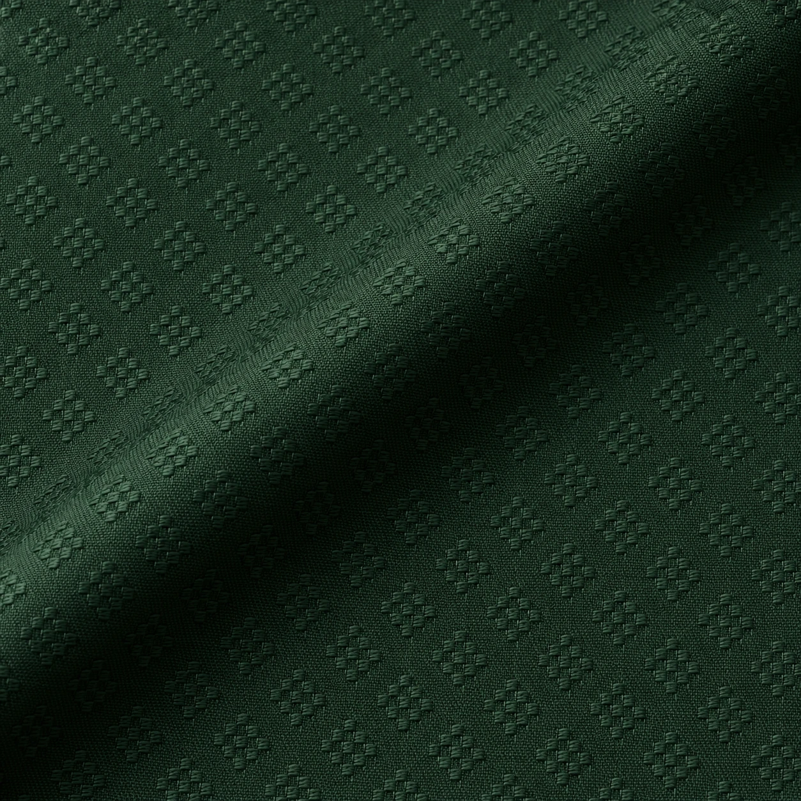
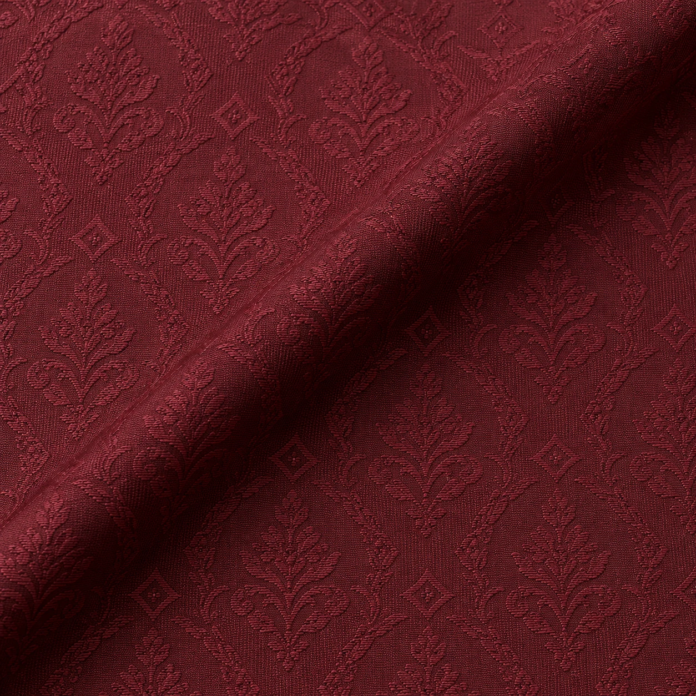

LZ-19
LZ-20 / Texture & Occasion / Jacquard
Naqsh Jacquard
A maroon study with a woven-motif direction. Consider it for a kurta in wedding / occasion.
Illustrative fabric guidePKR 9,990Mockup budget for a typical unstitched suit-cut reference. Actual length and price depend on width, measurements and garment.
- Shade direction
- Maroon
- Surface study
- Woven-motif direction
- Visual weight
- Medium to substantial / design intent
- Intended use
- Kurta / Wedding / occasion
- Fibre, width, care
- Confirm against selected physical stock
A woven figure produced by the structure of the cloth. Fibre content and motif scale vary.
Build a fabric & tailoring briefThis is a concept image and product budget for a website mockup. It is not a photograph or specification of confirmed LOOMZ stock.
The surface / 01
Look closer.
Woven-motif direction. The macro visual invites a closer reading of the cloth; the final decision belongs to a physical swatch, its composition and the way it will be cut.